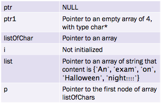

-
پوینتر (یا اشارهگر) چیست؟ پوینر آدرسی از مموری است که در آن object (مانند متغیرها و ...) قرار دارد. با استفاده از پوینترها میتوان به طور غیرمستقیم به این objectها دسترسی پیدا کرد. در زبان C آرگومانهای توابع "passed by value" هستند یعنی کپی از مقدار هر یک از آرگومان ها با فراخوانی شدن تابع در push ،run-time stack میشود. بنابراین هر تغییری که در حین اجرای تابع روی متغیرهای ورودی رخ دهد با بازگشت از تابع و پاک شدن بخشهایی از run-time stack که مربوط به تابع فراخوانده شده است از بین خواهد رفت. مثال از نحوهی استفاده از پوینتر در زبان C:
int *ptr;
علامت "*" نشانهی پوینتر است. در اینجا پوینتری به نام ptr از جنس int تعریف شدهاست. نحوهی مقداردهی پوینترها:
int *ptr; int object; ptr = &object;قطعه کد زیر را در نظر میگیریم: هدف این کد جابه جایی محتوای دو متغیر valueA و valueB است. اما چون در زبان c آرگومان های توابع by value به تابع پاس داده میشوند, پس از بازگشت از تابع مقادیر متغیر ها تغییر نیافته باقی میمانند.
void Swap (int firstVal, int secondVal); int main() { int valueA = 3; int valueB = 4; printf("Before Swap"); printf("valueA = %d and valueB = %d \n", valueA, valueB); Swap(valueA, valueB); printf("After Swap"); printf("valueA = %d and valueB = %d\n", valueA, valueB); } void Swap (int firstVal, int secondVal) { int tempVal; tempVal = firstVal; firstVal = secondVal; secondVal = tempVal; }
-
اپراتور پوینترها : ۱. address operator یا "&" : که آدرس حافظهی عملوند خود را مشخص میکند ۲.indirection operator یا deference operator یا "*" : که میتوان با آن به طور غیرمستقیم به مقدار object) memory object ای که پوینتر حاوی آدرس آن در حافظه است) دست یافت. یعنی در قطعه کد بالا *ptr و object معادل هستند. به طور مثال داریم : *ptr = *ptr +1 معادل است با object = object + 1
-
"pass by refrence" حال که در مورد پوینتر ها اطلاعات لازم را به دست آوردید سعی کنید که مفهوم را استنتاج کنید وقتی آرگومانهای توابع پوینتر باشند مقداری که به run-time stack افزوده میشود برابر با آدرس خانهای از حافظه است که مقدار متغیر در آن قرار دارد پس با جابهجا کردن مقادیری که پوینترها به آن اشاره میکنند مقدار متغیرها در حافظه تغییر مییابند. شرط لازم برای اینکه "pass by refrence" برای آرگومانهای یک تابع مفهوم داشته باشد این است که آرگومانها یا باید متغیر باشند و یا memory object باشند (یعنی باید آدرس داشته باشند)
#include
void NewSwap (int *firstVal, int *secondVal); int main() { int valueA = 3; int valueB = 4; printf("Before Swap "); printf("valueA = %d and valueB = %d\n", valueA, valueB); NewSwap(&valueA, &valueB); printf("After Swap "); printf("valueA = %d and valueB = %d\n" , valueA, valueB); } void NewSwap (int *firstVal, int *secondVal) { int tempVal; tempVal = *firstVal; *secondVal = tempVal; } 
-
null pointer :
پارهای از موارد لازم است پوینتر ما به هیچی یا همان null اشاره کند که در ساختمان دادههای dynamic کاربرد دارد.(linked list ها که در آینده با آنها بیشتر آشنا خواهید از جمله کاربرد آن میباشد) نکته : هیچ memory object ای نمیتواند در خانه ی 0 قرار بگیرد سوال اشکال کد زیر چیست و چه اتفاقی در حال رخ دادن است؟scanf("%d",input);با استفاده از دستور scanf از کاربر مقدار ورودی گرفته میشود ولی به جای اینکه این مقدار را در متغیر input قرار دهد آن را در خانه ای که آدرس آن محتوای متغیر input است ورودی را قرار می دهد که این مقدار توسط کامپایلر به طور رندوم هنگام allocate کردن متغیر به آن مقداردهی شده است. این مقدار ممکن است خارج از دسترس برنامه، غیرقابل نوشتن باشد و یا ... بنابراین تا زمان اجرا نمی تونیم پیشبینی کنیم چه اتفاقی دقیقا میافتد و ممکن است برنامه crash کند. -
پارهای از توضیحات درمورد pointer's syntax
type *ptr;
در دستور بالا type می تواند از جنس نوعهای پیش فرض باشد و یا از نوعهایی باشد که در برنامه تعریف شده اند (predefined). قوانین مربوط به نامگذاری پوینترها همانند قوانین نامگذاری متغیرهاست. اگر اسم پوینتر به دنبال "*" بیاید دیگر متغیر حاصل از جنس type است و دیگر با آن تفاوتی ندارد. چگونه میتوان از پوینترها در برگرداندن مقادیر متغیرها بهره برد؟ از return value برای ارزیابی عملکرد تابع خود استفاده کنید
-
آرایه لیستی از دادههاست که پشت سر هم در مموری قرار دارند. برای دسترسی به دادهی خاصی از آرایه باید به اولین خانه ایندکس ۰ بدهیم و به ازای هر عضو یک واحد به آن اضافه کنیم. جنس تمامی اعضای آرایهها یکسان میباشد که در هنگام تعریف کردن مشخص میشود. نحوه ی تعریف آرایهها :
type array_name [size];
ابتدا type آرایه را باید مشخص کنیم سپس نام آن آورده میشود و size آن که طول آرایه را مشخص میکند که جنس آن باید constant باشد. ایندکسهای یک آرایهی n تایی از 0 تا n-1 میباشد، یعنی برای دسترسی به خانهی k ام آرایهی a داریم : a[k-1]. اگر متغیر arr متغیری local باشد حافظه از allocate، run-time stack میشود.
base pointer of an array is array_name[0]
-
ماکروها چیستند و فایدهی آنها چیست؟ ماکروها همان مقادیر ثابتی هستند که معمولا در ابتدای فایل برنامه (قبل از main) وجود دارند و به طور معمول با حروف بزرگ نمایش داده میشوند syntax آن به صورت زیر است:
#define MACRO 5با کامپایل شدن کد، کامپایلر به جای تمامی MACRO های موجود در کد مقدار آن را قرار میدهد. اگر از ماکروها در کد استفاده نکنیم و مقدار آنها را مستقیما استفاده کنیم با تغییر مقدار تعیین شده باید در تمامی موارد استفاده شده مقدار عوض شود اما با استفاده از ماکرو کافی است مقدار در تعریف ماکرو آپدیت شود و کد را دوباره کامپایل کنیم. -
آرایهها و پارامترها همان طور که متغیرها میتوانستند آرگومان ورودی توابع باشند آرایهها نیز این قابلیت را دارند، اگر طول آرایه ای که آرگومان ورودی تابع است زیاد باشد کپی کردن آن در استک ممکن است زمان زیادی در execution time را به خود اختصاص دهد بنابراین بهتر است که با refrence این کار صورت بگیرد. در برنامههای C آرایهها به طور دیفالت by refrence به توابع پاس داده میشوند همانطور که در مثال مشاهده میکنید syntax فرستادن آرایه ای که آرگومان یک تابع است به طور معمول خود با [ ] نمی باشد. در زبان C اسم آرایه معادل با رفرنس (آدرس خانهی حافظهای که در آن قرار دارد) به عنصر base آن میباشد یعنی داریم:
type array_name[SIZE]; array_name = &array_name[0];و همچنین جنس اسم آرایه *type است. پس با فراخوانی تابعarray_name در run-time stack کپی میشود و ما reference به سر آرایه را در استک خود خواهیم داشت. (یعنی دسترسی by refrence). حال چگونه تنها یک عنصر آرایه را با value و یا با refrence به تابع پاس دهیم؟ -
در زبان string ،C مجموعهای از کاراکترهاست که بین " " قرار میگیرد کامپایلر به انتهای آن کاراکتر '\0' را اضافه میکند و در آرایهای از جنس char آن را ذخیره میکند، پس در آرایهای به سایز n حداکثر طول string که میتواند در آن ذخیره شود برابر است با n-1 .
-
مقدار هر یک اجرای قطعه کد بالا خواهیم مقدار هر یک از متغیرها به صورت زیر خواهد بود.
char** ptr= NULL; char* ptr1[4]; char listOfChars[4] = {'a','b','c','d'}; int i; char* list[5]= {"An", "exam", "on", "Halloween", "night!!!!"}; char** p; p = list;در قسمت نخست با توجه به اینکه *(p+1) پوینتر است و listOfChar [1] از جنس کاراکتر میباشد در واقع آدرس خود اشارهگر را تغییر دادهایم و به قسمتی از حافظه که در دسترس ما نیست اشاره میکند. قسمت دوم به درستی کامپایل خواهد شد اما در زمان اجرا با پیغام bus error: 10 برنامه کراش خواهد کرد علت این امر آن است که list به صورت آرایهای ۵ تایی از جنس char* تعریف شده است پس از مقداردهی اولیهی آن نمیتوانیم اعضای آن را تغییر بدهیم قسمت سوم نیز به درستی کامپایل خواهد شد اما در هنگام اجرا چون listOfChar دارای ۴ عضو است حداکثر اندیس قابل دسترسی آن برابر با ۳ خواهد بود (مقادیر ۰ تا ۳) بنابراین هنگامی که میخواهیم به listOfChar+4 دسترسی بیابیم در واقع از محدودهی حافظهی اختصاص داده شده به برنامه خارج گشتیم. اگر بخواهیم قطعه کد c در سوال سه را به گونهای تغییر دهیم که امکان تعویض کاراکتر i ام یک string از مجموعهای از آنها داشته باشیم. باید به صورت زیر عمل کنیم.
char list[5][]={"An", "exam", "on", "Halloween", "night!!!!"}; char **list = (char**) malloc(5 * sizeof (char*)); char ** list = {"An", "exam", "on", "Halloween", "night!!!!"};و در آخر نیز باید حافظهای را که توسط malloc کردن تخصیص دادهایم را آزاد کنیم یعنی:
free(list);مشکل قسمت چهارم برابر نبودن جنس طرفین تساوی است. در سمت راست char** داریم و در سمت دیگر آن را با char [const] میخواهیم مقداردهی کنیم که امکان پذیر نیست. قسمت پنج : فایل استاندارد شامل تمام هدرفایل های (کتابخانههای) استاندارد میباشد. مانند stdio، stdlib و ...
-
Pointer
- definition
- pointer operator
- pass by refrence
- Null pointer
- Syntax of pointers
-
Array
- definition
- Macro
- parameter
- String
- تحلیل سوالات ابتدای کلاس آنلاین